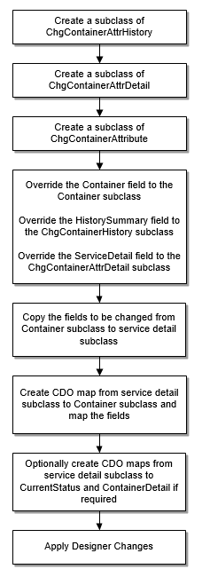

Definieren einer ChgContainerAttribute-Unterklasse
"ChgContainerAttribute" ist eine Unterklasse von "ContainerTxn". Dieser Dienst erlaubt es Ihnen, Containerattribute zu ändern. ChgContainerAttribute ist in Opcenter Execution Medical Device and Diagnostics Technische Referenz: WCF-Dienste oder in Opcenter Execution Core Technische Referenz: WCF-Dienste definiert.
Die folgende Abbildung veranschaulicht die Reihenfolge der Konfigurationen für den ChgContainerAttribute-Dienst. Die meisten Konfigurationen werden automatisch für Sie erstellt, wenn Sie den ChgContainerAttribute-Assistenten verwenden.

| • | Die Container-Unterklasse |
Bevor Sie den Assistenten zum Erstellen einer Unterklasse des ChgContainerAttribute-Dienstes verwenden, muss die Container-Unterklasse für den Dienst vorhanden sein. Dies liegt daran, dass Sie zum Zeitpunkt der Diensterstellung den Containertyp angeben werden. Anschließend liest der Assistent alle Felder in der Container-Unterklasse und erstellt auch die erforderlichen CDO-Zuordnungen.
| Wichtig: | Ändern Sie nach dem Erstellen der ChgContainerAttribute-Unterklasse den Containertyp nicht mehr. |
| • | Benutzerdefinierte Felder |
Sie können der Container-Unterklasse jederzeit benutzerdefinierte Felder hinzufügen: vor oder nach dem Erstellen des ChgContAttribute-Dienstes. Die vorhandenen benutzerdefinierten Felder in der Container-Unterklasse werden vom Assistenten übernommen. Wenn Sie der Container-Unterklasse Felder zu einem anderen Zeitpunkt hinzufügen möchten, können Sie die Felder dem Dienst hinzufügen, indem Sie den Assistenten erneut starten.
Die folgende Liste enthält die Containerattribute, die Sie nicht über den ChgContainerAttribute-Dienst ändern können:
|
Alle Instanz-IDs |
LastActivityDate |
|
CDOTypeID |
LastActivityDateGMT |
|
ChildCount |
OriginalContainer |
|
ContainerDetail.Parent |
OriginalFactory |
|
CurrentStatus |
OriginalQty |
|
CurrentStatus.ReworkLoopCount |
OriginalQty2 |
|
CurrentStatus.ReworkStatus |
OriginalStartDate |
|
CurrentStatus.ReworkTotalCount |
OriginalStartDateGMT |
|
CurrentThruputChildCount |
OriginalUOM |
|
CurrentThruputQty |
OriginalUOM2 |
|
CurrentThruputQty2 |
Eltern (Parent) |
|
CurrentThruputUnitCount |
Menge |
|
FactoryBeginDate |
Menge2 |
|
FactoryBeginDateGMT |
SplitFrom |
|
GateStatus |
Status |
|
InProcess |
UnitCount |
Einige Attribute werden durch andere Dienste geändert, während andere Attribute vom System festgelegt werden.